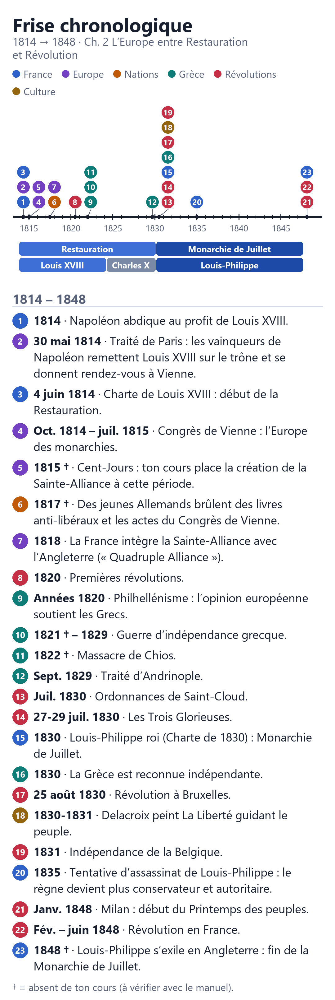
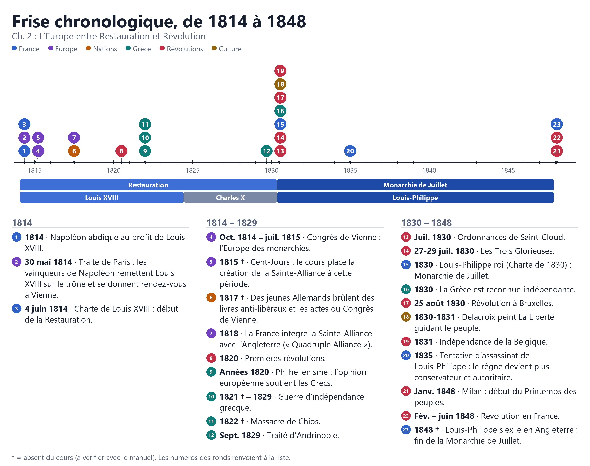

Histoire-Géographie
Chapitre 2, de 1814 à 1848
Comment les relations entre les souverains et les peuples européens évoluent-elles de 1814 à 1848 ?
En images, à enregistrer
Frise, version téléphone Se lit en défilant, sans zoom.

Frise, vue d’ensemble Format paysage, à agrandir en pinçant.

Mise à jour le 2 novembre 2026. Le signe † marque une information absente du cours. Un oubli, une erreur ? Dis-le à celui qui t’a envoyé ce lien.